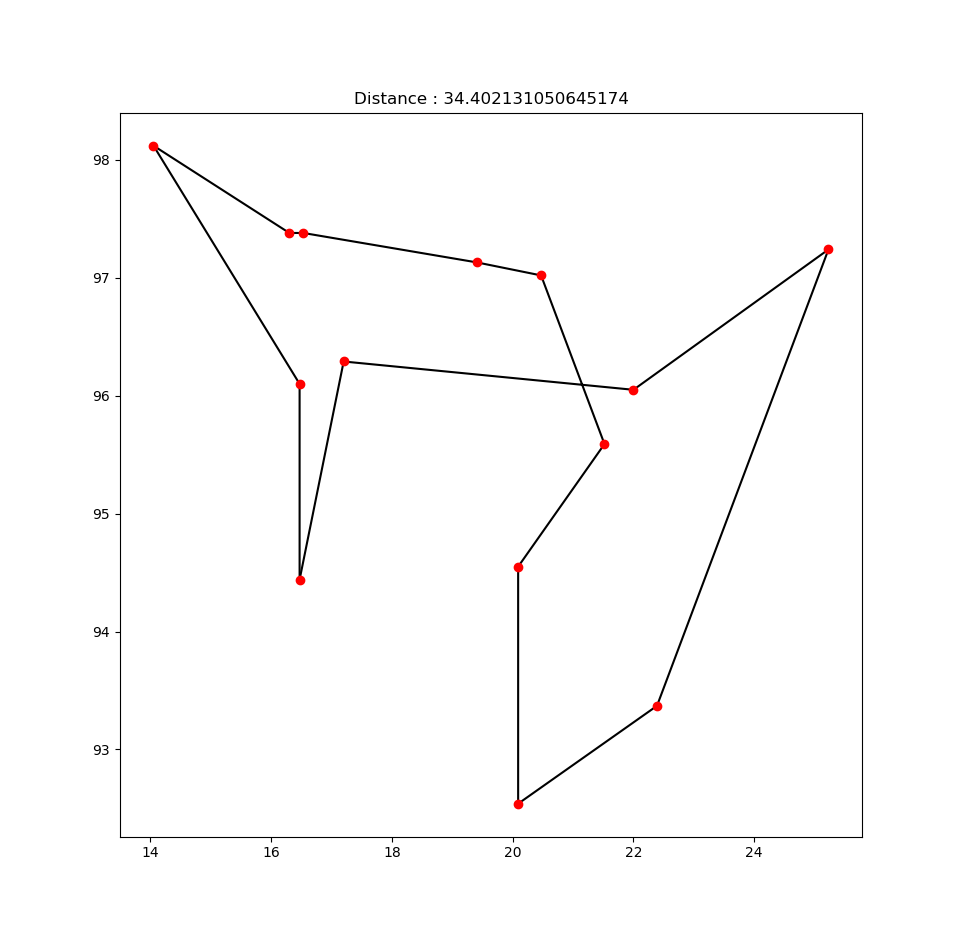

Lorsque l'on fixe la température de départ à 10e6, on obtient le résultat suivant :

On se rend clairement compte ici que l'énergie du système mets plusieurs itérations à réellement faiblir lorsque la température de départ est trop élevée.
| 10e6 | 20 | |
| 0.9 | 33.7 | 34.4 |
| 0.2 | 42.48 | 40.3 |
| 0.5 | 41.589 | 36.759 |
| 0.99 | 30.878 | 30.878 |